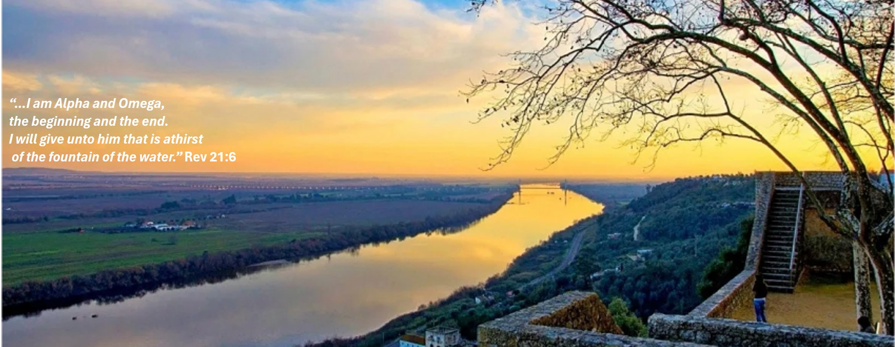

Santarem Seventh-day Adventist Church

UPCOMING EVENTS
NOVEMBER 2023
11th of November from 10:00 - Holly Supper - Santarém SDA Church
25th of November at 15:00 - Adventurer meeting - Santarém SDA Church
DECEMBER 2023
16th of December at 16:00 - Christmas Cerimony - Santarém SDA Church